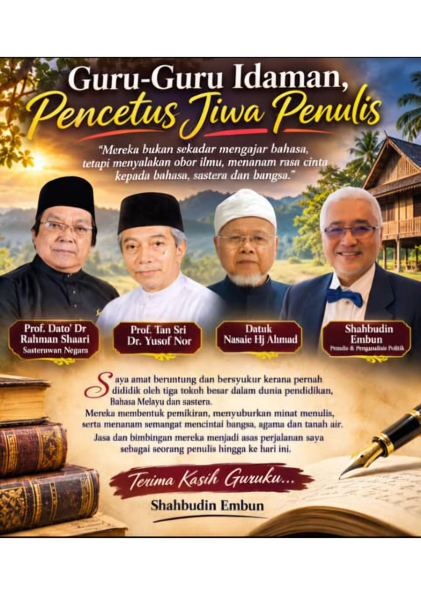

BAB KHAS MEMOIR
GURU-GURU YANG MEMBENTUK PENA
Daripada Bilik Darjah ke Dunia Penulisan Politik
Apabila orang bertanya mengapa saya begitu suka menulis, mengapa saya mampu menghasilkan beratus-ratus rencana politik dan mengapa saya begitu gemar membaca serta mengulas perjalanan tokoh-tokoh negara, jawapan saya sebenarnya bermula jauh sebelum saya mengenali dunia politik.
Segalanya bermula di bangku sekolah.
Saya amat bertuah kerana sepanjang perjalanan pendidikan, saya dipertemukan dengan guru-guru yang bukan sahaja mengajar mata pelajaran, tetapi turut membentuk pemikiran, disiplin, minat membaca dan kecintaan saya terhadap bahasa.
Hari ini, apabila saya melihat kembali perjalanan tersebut, saya sedar bahawa setiap seorang daripada mereka meninggalkan kesan tersendiri dalam kehidupan saya.
1. DATO' PROFESOR DR RAHMAN SHAARI – GURU YANG MENANAM MINAT TERHADAP BAHASA MELAYU
Ketika saya berada di Darjah Lima sekolah rendah, saya mendapat peluang belajar Bahasa Melayu daripada seorang guru yang begitu istimewa, iaitu Dato' Profesor Dr Rahman Shaari.
Beliau kemudiannya dikenali sebagai seorang tokoh sastera dan Sasterawan Negara.
Saya masih menganggap diri saya bertuah kerana pernah menjadi anak murid beliau pada usia yang begitu muda.
Pada usia sepuluh atau sebelas tahun, saya mungkin belum memahami sepenuhnya betapa besarnya dunia bahasa dan kesusasteraan. Namun, pengalaman belajar daripada seorang guru yang mempunyai kecintaan mendalam terhadap bahasa Melayu telah membuka satu ruang dalam pemikiran saya.
Hari ini, apabila saya menulis rencana yang panjang, menyusun ayat, membina hujah dan cuba menyampaikan sesuatu mesej kepada pembaca, saya sering teringat bahawa minat itu telah mula berputik sejak sekolah rendah.
2. DATO' SELAMAT SAAD – GURU BAHASA MELAYU DI DERMA ENGLISH SCHOOL
Perjalanan saya diteruskan di Derma English School, Perlis.
Di situ, guru Bahasa Melayu saya sehingga Tingkatan Tiga ialah Dato' Selamat Saad, yang kemudiannya pernah berkhidmat sebagai Ahli Majlis Mesyuarat Kerajaan Negeri Perlis.
Beliau merupakan seorang lagi insan yang memberikan pengaruh dalam pembentukan minat saya terhadap bahasa Melayu.
Saya melihat bagaimana seseorang guru bukan sekadar menyampaikan sukatan pelajaran, tetapi turut membentuk cara murid berfikir dan menyusun pandangan.
Saya percaya pengalaman belajar daripada beliau menjadi sebahagian daripada asas yang membantu saya membina keyakinan untuk menulis dan menyampaikan pendapat.
3. AUNTIE ADIBAH AMIN – SEORANG NOVELIS, KOLOMNIS DAN GURU KEHIDUPAN
Jika ditanya tentang seorang insan yang banyak memberikan inspirasi kepada saya dalam dunia penulisan, nama Auntie Adibah Amin pasti akan saya sebut.
Beliau bukan sekadar seorang novelis dan kolumnis yang hebat. Bagi saya, beliau juga seorang pendidik yang mempunyai pendekatan tersendiri dalam menyampaikan ilmu bahasa.
Ketika saya melanjutkan pengajian undang-undang di UiTM, saya berpeluang menumpang di sebuah bilik di rumah beliau bersama anak saudaranya, Amin Syakib.
Bayangkan kehidupan saya ketika itu.
Saya diberikan tempat tinggal secara percuma. Makanan juga disediakan tanpa bayaran.
Bagi seorang anak muda yang sedang melanjutkan pelajaran, pertolongan seperti itu amat besar nilainya.
Saya tidak akan melupakan ihsan Auntie Adibah.
Lebih daripada itu, saya berpeluang melihat sendiri kehidupan seorang penulis dan pendidik yang begitu komited terhadap ilmu.
Saya menyaksikan bagaimana beliau mengajar kelas tuisyen kepada anak-anak pelajar yang sedang membuat persediaan menghadapi peperiksaan SPM di rumahnya.
Ada satu keistimewaan pendekatan beliau yang begitu saya ingati.
Ketika mengajar Bahasa Melayu, beliau menggunakan Bahasa Inggeris sebagai salah satu pendekatan penerangan. Beliau mampu menghubungkan kedua-dua bahasa dengan begitu menarik sehingga pelajar dapat memahami penggunaan bahasa dengan lebih baik.
Saya juga mengikuti tulisan-tulisan beliau dalam akhbar Utusan Melayu dan The Star, termasuk kolum As I See It.
Beliau turut dikenali melalui tulisan dan usaha pengajaran bahasa, termasuk ruangan Learn Bahasa, serta pernah menyampaikan pengajaran bahasa melalui siaran Radio Televisyen Malaysia (RTM).
Saya membaca tulisan-tulisan beliau dan melihat sendiri bagaimana bahasa boleh digunakan untuk mendidik, menyampaikan pandangan dan membina pemikiran masyarakat.
Pengalaman tinggal di rumah beliau merupakan satu bentuk pendidikan tidak formal yang sangat berharga kepada saya.
Saya bukan sahaja belajar daripada buku, tetapi belajar melalui pemerhatian terhadap seorang penulis yang benar-benar mengamalkan apa yang diajarnya.
Jika hari ini saya mempunyai kecenderungan untuk menulis dalam Bahasa Melayu dan Bahasa Inggeris, saya percaya pengalaman bersama Auntie Adibah turut memainkan peranan.
Saya sentiasa berterima kasih atas ihsan dan budi beliau.
4. TAN SRI DR YUSOF NOOR – GURU YANG MENGAJAR erti DISIPLIN
Ketika berada di Tingkatan Empat dan Lima, saya turut mendapat pendidikan agama Islam daripada dua orang guru yang kemudiannya menjadi tokoh penting dalam kehidupan awam negara.
Salah seorang daripada mereka ialah Ustaz Tan Sri Dr Yusof Noor, bekas Menteri.
Beliau seorang guru yang sangat berdisiplin dan tegas ketika mengajar.
Saya masih teringat, saya pernah beberapa kali ditegur dan dikenakan hukuman kerana bercakap di dalam kelas ketika beliau sedang mengajar.
Beliau menggunakan kayu pembaris besar untuk mendisiplinkan murid yang tidak memberikan perhatian.
Itulah pengalaman zaman persekolahan saya.
Namun, apabila saya melihat kembali kehidupan hari ini, saya dapat memahami satu perkara yang amat penting daripada pendekatan beliau: disiplin merupakan asas kejayaan dalam menuntut ilmu.
Satu perkara yang paling saya ingati ialah penekanannya terhadap penggunaan perpustakaan.
Beliau mewajibkan kami menggunakan perpustakaan dan membudayakan pembacaan.
Amalan itulah yang saya bawa sehingga ke universiti.
Ketika melanjutkan pelajaran di peringkat pengajian tinggi, saya menjadikan perpustakaan sebagai tempat penting untuk membaca, membuat rujukan dan menyiapkan tugasan.
Bagi saya, perpustakaan bukan sekadar tempat menyimpan buku. Ia merupakan tempat membina pemikiran.
Terima kasih, Ustaz. Pengajaran tentang disiplin dan budaya membaca itu terus saya bawa sepanjang kehidupan.
5. USTAZ DATO' NASAIE HJ AHMAD – GURU YANG LEMBUT TUTUR KATA, TINGGI KOMITMEN ILMUNYA
Seorang lagi guru agama yang begitu saya kenang ialah Ustaz Dato' Nasaie Hj Ahmad.
Jika Tan Sri Dr Yusof Noor terkenal dalam ingatan saya dengan pendekatan disiplin yang tegas, Ustaz Nasaie pula mempunyai perwatakan yang sangat berbeza.
Beliau seorang yang begitu lembut tutur katanya.
Namun, kelembutan itu tidak mengurangkan kesungguhan dan komitmen beliau terhadap ilmu yang disampaikan.
Saya dapat melihat bagaimana beliau mengajar dengan penuh ketelitian dan kesabaran.
Daripada beliau, saya belajar bahawa ilmu tidak semestinya disampaikan dengan suara yang keras. Kadangkala kelembutan, kesabaran dan keikhlasan seseorang guru lebih mudah menyentuh hati anak muridnya.
Kedua-dua guru ini memberikan saya pengalaman pendidikan agama yang berbeza tetapi saling melengkapi.
Seorang mengajar saya tentang disiplin, seorang lagi memperlihatkan keindahan kelembutan dalam menyampaikan ilmu.
6. MENGAPA SAYA SUKA MENULIS?
Apabila saya menghimpunkan semua kenangan ini, barulah saya memahami mengapa menulis menjadi sebahagian daripada kehidupan saya.
Saya mendapat asas bahasa Melayu daripada guru-guru yang berpengalaman.
Saya mendapat inspirasi penulisan daripada Auntie Adibah Amin.
Saya belajar disiplin membaca daripada Tan Sri Dr Yusof Noor.
Saya belajar kelembutan dan kesungguhan menuntut ilmu daripada Ustaz Dato' Nasaie Hj Ahmad.
Saya juga tidak boleh melupakan pesanan ibu supaya jangan meninggalkan solat dan pesanan ayah supaya menjadi manusia yang lebih baik daripada dirinya.
Semua pengalaman ini membentuk diri saya sedikit demi sedikit.
Daripada seorang pelajar sekolah di Perlis, saya meneruskan perjalanan pendidikan ke Kuala Lumpur, melanjutkan pengajian dalam bidang perakaunan dan undang-undang serta akhirnya terlibat dalam dunia penulisan politik.
Saya pernah menghasilkan buku Najib Leader of Transformation pada tahun 2010, yang disunting oleh Dato' Seri Dr Ahmad Zahid Hamidi.
Saya juga menghasilkan beratus-ratus rencana politik yang membincangkan pelbagai isu kepimpinan, pentadbiran negara dan tokoh-tokoh politik termasuk Anwar Ibrahim, Najib Razak serta Ahmad Zahid Hamidi.
Saya tidak pernah menganggap diri saya sebagai penulis yang sempurna.
Setiap tulisan boleh diperbaiki. Setiap fakta perlu dinilai semula. Setiap pandangan boleh diuji oleh masa dan perkembangan ilmu.
Namun, saya bersyukur kerana minat membaca dan menulis yang bermula sejak zaman persekolahan terus hidup sehingga hari ini.
PENUTUP: KEPADA GURU-GURU SAYA, TERIMA KASIH
Apabila usia semakin meningkat, kita mula memahami bahawa kejayaan seseorang bukan hasil usahanya seorang diri.
Di belakang setiap insan yang berjaya, pasti ada tangan yang pernah membimbing, suara yang pernah menasihati dan hati yang pernah mengambil berat.
Saya mahu merakamkan penghargaan kepada semua guru yang pernah mendidik saya.
Kepada Dato' Profesor Dr Rahman Shaari, terima kasih kerana menjadi antara insan yang memperkenalkan saya kepada keindahan Bahasa Melayu.
Kepada Dato' Selamat Saad, terima kasih atas pendidikan dan bimbingan di Derma English School.
Kepada Auntie Adibah Amin, terima kasih atas tempat berteduh, makanan, bimbingan dan inspirasi penulisan yang tidak ternilai ketika saya melanjutkan pengajian undang-undang di UiTM.
Kepada Ustaz Tan Sri Dr Yusof Noor, terima kasih kerana mengajar saya erti disiplin dan budaya membaca.
Kepada Ustaz Dato' Nasaie Hj Ahmad, terima kasih atas kelembutan dan kesungguhan dalam menyampaikan ilmu agama.
Saya mungkin tidak mampu membalas segala jasa mereka.
Tetapi saya mahu nama dan sumbangan mereka tercatat dalam memoir kehidupan saya.
Kerana jika hari ini saya masih menulis, masih membaca dan masih berusaha menyampaikan pandangan kepada masyarakat, sebahagian daripada diri saya sebenarnya terbentuk daripada didikan insan-insan hebat ini.
Saya bukan dilahirkan sebagai penulis. Saya dibentuk oleh guru-guru, dibesarkan dengan pesanan ibu bapa dan dimatangkan oleh pengalaman kehidupan.
Dan hingga hari ini, pena saya masih belum berhenti menulis.
SHAHBUDIN EMBUN
Anak Petani dari Perlis
Penganalisis Politik dan Penulis
Penghuni Chow Kit Road sejak 1971